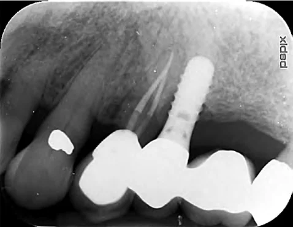

نسخه استخراجشده؛ ترجمه یا تأیید علمی انجام نشده است. وضعیت: captured
پالپ و پریودنشیوم منشأ رویانی مشترک دارند و در سه مسیر آناتومیک به هم متصلاند:

| مسیر | توضیح |
|---|---|
| فورامن اپیکال | مسیر اصلی و بزرگترین راه ارتباطی |
| کانالهای جانبی و فرعی | بهویژه در یکسوم اپیکال؛ در مولرها اغلب از کف اتاقک پالپ به ناحیه فورکیشن |
| توبولهای عاجی | در نواحی با سمان از دست رفته یا سطح ریشه برهنه |
🔑 وجود کانال فرعی از کف اتاقک پالپ به فورکیشن، توضیح میدهد چرا گاهی نکروز پالپ بهصورت ضایعه فورکیشن ظاهر میشود بدون آنکه پاکت عمیقی از مارجین لثه وجود داشته باشد.
ضایعه اندودنتیک اولیه — منشأ پالپ، پریودنشیوم ثانویاً درگیر نشده.
ضایعه اندودنتیک اولیه با درگیری ثانویه پریودنتال.
ضایعه پریودنتال اولیه — منشأ پاکت، پالپ سالم.
ضایعه حقیقی ترکیبی — دو ضایعه مستقل که به هم رسیدهاند.
🔑 تست حیات پالپ، نخستین و تعیینکنندهترین گام است.
| یافته | منشأ اندو | منشأ پریو |
|---|---|---|
| حیات پالپ | 🔴 نکروز | 🟢 زنده |
| شکل پاکت | باریک و منفرد، شبیه شکاف، تا آپکس | پهن و قیفی، همراه با پاکتهای دیگر |
| سایر نواحی دهان | معمولاً سالم | معمولاً درگیری منتشر پریودنتال |
| سابقه | ترومای دندانی، ترمیم عمیق، پوسیدگی وسیع | پریودنتیت شناختهشده |
| پاسخ به درمان ریشه | بهبود چشمگیر | بدون تغییر |
⚠️ نکته کلیدی: پاکت باریک و منفرد و عمیق در دندانی که بقیه دهانش سالم است، تا خلافش ثابت نشده منشأ اندودنتیک دارد. این الگو با پریودنتیت — که بیماریای منتشر است — جور در نمیآید.
🔑 در هر ضایعهای که جزء اندودنتیک دارد، ابتدا درمان ریشه انجام میشود، سپس ۲ تا ۳ ماه صبر و ارزیابی مجدد.
بخش قابل توجهی از ضایعه ممکن است فقط با درمان ریشه برطرف شود — و آنگاه هیچ درمان پریودنتالی لازم نیست.
مداخله جراحی پریودنتال زودهنگام روی ضایعهای با منشأ پالپ، سمان و بافت باقیمانده را بیدلیل از بین میبرد و پیشآگهی را بدتر میکند.
ارزیابی واقعی جزء پریودنتال، تنها پس از حذف عامل اندودنتیک ممکن است.
| نوع | پیشآگهی |
|---|---|
| اندودنتیک اولیه | 🟢 عالی — فقط با درمان ریشه |
| اندو اولیه با درگیری ثانویه پریو | 🟡 خوب تا متوسط — وابسته به میزان تخریب پریودنتال |
| پریودنتال اولیه | 🟡 وابسته به شدت بیماری پریودنتال؛ درمان ریشه کمکی نمیکند |
| حقیقی ترکیبی | 🔴 ضعیفترین — هر دو مشکل باید حل شوند |
⚠️ اشتباه رایج ۱:تست حیات پالپ نخستین گام تشخیص است.
⚠️ اشتباه رایج ۲:درمان ریشه همیشه اول انجام میشود، سپس ارزیابی مجدد.
⚠️ اشتباه رایج ۳: ضایعه حقیقی ترکیبی ضعیفترین پیشآگهی را دارد، نه اندودنتیک اولیه.